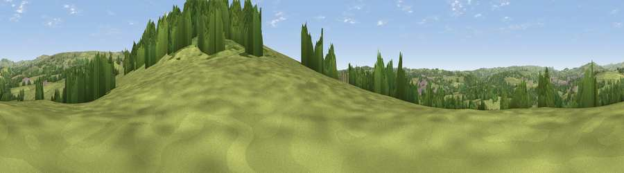

Viewpoint near Cheddleton
#35950 in England · top 70% of its area beats it · near CheddletonThe view, rendered

A 360° render of this exact spot computed from the terrain model, tree cover and land cover — summer colours, afternoon light, calibrated against photographs of famous viewpoints. Real trees, hedges and buildings will differ in detail.
The panorama
Grey silhouette: terrain skyline in each direction (720 bearings, Earth curvature and refraction included). Dashed green: skyline with trees (+15 m) and buildings (+8 m) as obstacles. Blue strip: how far the ground is visible on each bearing.
Where the view opens
Wedge length = distance to the farthest visible ground on that bearing (vegetation-aware). Rings at 10, 25 and 50 km.
What fills the view
63% grassland · 30% woodland · 4% built-up · 3% cropland
Angular shares of the visible panorama (visual magnitude), not map area. Landscape diversity 0.38 (0–1 Shannon).
Key numbers
More beautiful places nearby
The staircase of upgrades: each row has a higher view potential than everything closer. Driving times are estimates from straight-line distance, calibrated against real road routing — check an actual route before setting out.
| Place | Direction | Drive | Score |
|---|---|---|---|
| Viewpoint near Ipstones | ESE · 2 km | ~5 min | 54.9 |
| Viewpoint near Bradnop | NE · 4 km | ~9 min | 65.2 |
| Viewpoint near Bradnop | NE · 5 km | ~10 min | 65.3 |
| Viewpoint near Thorncliffe | NNE · 7 km | ~15 min | 66.5 |
| Viewpoint near Meerbrook | N · 10 km | ~19 min | 72.1 |
| Viewpoint near Meerbrook | N · 10 km | ~20 min | 73.2 |
| Viewpoint near Meerbrook | N · 11 km | ~21 min | 73.5 |
| Viewpoint near Wootton | SE · 12 km | ~22 min | 74.8 |
53.07446, -2.00556 · source: screening · position refined by local search. Computed location — check access rights before visiting.